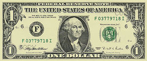
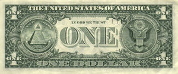
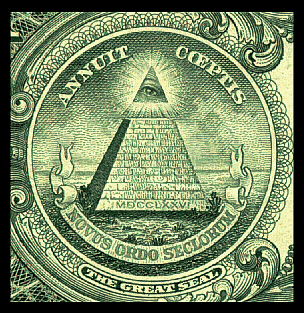
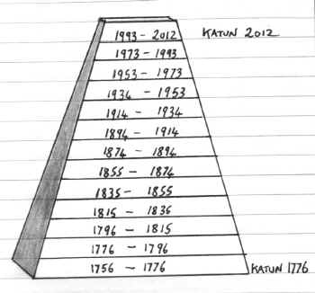
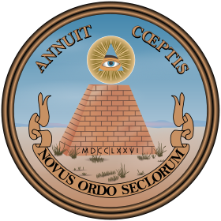
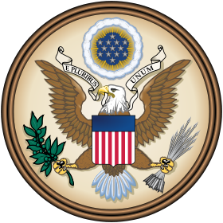
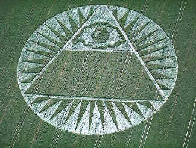
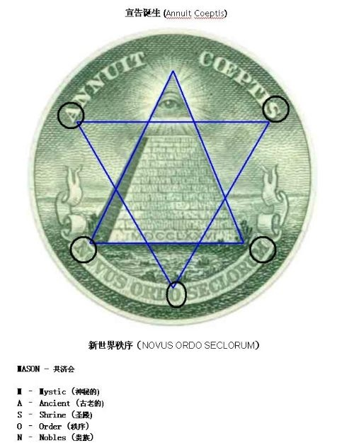

很多人做梦都没有想到，美国人每天使用的一美元纸币背面的金字塔上帝之眼图案竟然早就预言了2012！


美元纸币正面是乔治.华盛顿的头像，背面是金字塔上帝之眼图案和鹰图案

一美元纸币背面的金字塔上帝之眼图案
维基版解释：背面的图案充满象征和數秘術暗示，通常解释如下：
从
1782年开始，背面图案包括一个三个环围在一起组成的美国国徽正面图案。金字塔黑暗的一面朝向西方。暗示了当时蛮荒未被探索过的北美西部。金字塔上方独立的「帽子」中，包含一个上帝之眼图案，这象征了虽然美国的建设还没有完成，但在上帝的帮助下，目标一定会达到。旁边用拉丁文写着ANNUIT
COEPTIS（他（神）领导我们的事业）。另一句强调的是NOVUS ORDO SECLORUM（时代新秩序）指的是刚刚从英国不久的独立。在金字塔底部写着
MDCCLXXVI 即罗马数字分1776年，在这一年美国独立宣言被签署。

最新解释：
一美元纸币背面13层金字塔及上帝之眼图案与玛雅历法完全一致，并且预言了2012！
13
层金字塔有4个面，4乘以13为52，一年有52周，13与52是玛雅历法中的关键数字。玛雅历法中的一个Katun周期有7200天，约有20年，有的历法研究者用Katun周期的最后一年来指代该周期。象征美国独立的1776年是第一层
Katun的最后一年，而2012年则是最后一个（第13层）Katun的最后一年。
一美元纸币背面其中的一个印章(Seal)的图像是金字塔，这个金字塔有13层，在13层金字塔的顶端有一个放射光芒的上帝智慧之眼，在此预
示着美国人在走完13个Katun 以后（2012年之后）的觉醒。
所以一美元纸币金字塔上帝之眼图案对美国来说是个预言：1776年建国，2012年进入上帝之眼！
更深一层的意义是对整个人类的预言：
13 层金字塔代表大周期Great Cycle=13个Baktun周期，每个Baktun周期=20个Katun周期，金字塔底层代表大周期的开始3114
BC，第13层代表大周期的结束2012年。 在13层金字塔的顶端有一个放射光芒的上帝智慧之眼，在此预 示着人类在走完13个Baktun 以后的觉醒。
Annuite Coeptis 的意思是：神在眷顾着我们的所作所为； Novus Ordo
Seclorum的意思是：新世纪的新次序。我们目前生活在一个崇尚物质的时代，现代人主要关心的是金钱、美女、肉欲、享乐、成就、权力和地位。对此没有兴趣的人也只能无可奈何在生活浊流之中苦苦挣扎。人们对由此而带来的精神世界的崩溃已司空见惯，对邪恶、残暴、战争、灾难、瘟疫、饥饿、恐怖主义，和疯狂的社会乱象也渐趋麻木。很少人能意识到人类社会已在走向一条自我毁灭之路。
在如此人欲横流和物欲横流的社会，有什么力量能净化地球呢？肯定不是靠政府和法律的强行管制，因为法律是人定的，是有漏洞的，违法者可以靠地位、关系和金钱逃脱惩罚。此外，法律只能制裁看得见的人的行为，而不可能约束看不见的人的内心。当然更不可能靠所谓科学的突破，因为正是科学使人类越来越追求物质享受和远离道德良心。这种使人类道德回升的力量只能来自觉醒的人类，也就是说人类必须反思，而且一定是要有相当数量的。但是在这样一个充满诱惑和生存压力的社会，人类反思谈何容易！更不用说大批人共同参与反思！因为即便是有个别人想反思，对社会所造成的影响也是相当有限的。这或许可以净化个人，但根本不可能起到“净化地球＂的作用。
根据玛雅历法，1992年是最后一个Baktun (第十三个)的最后一个20年的第一年
(20年就是一个Unial，玛雅历法称这最后的20年为“地球更新期＂)。几千年前玛雅人就根据天象做出预言，觉醒的人们将会完成“净化地球＂这一神圣使命。在2012年12月21日，人类将走向全新的文明。

美国国徽背面的13层金字塔与上帝之眼

美国国徽正面的鹰与盾

2002年出现的麦田圈，显示金字塔与上帝之眼！
麦田圈里的带上帝之眼的金字塔与33条射线 指代了美国历史上神秘的 共济会。
美国历任总统与世界名人多是共济会成员。
乔治·华盛顿、富兰克林·德拉诺·罗斯福、约翰·埃德加·胡佛、马克·吐温、柯南道尔、加里波第、丘吉尔、本杰明·富兰克林、亨利·福特、托马斯·爱迪生、爱因斯坦、艾萨克·牛顿。。。。。。
在1793年9月18日，华盛顿使用三角架和滑轮装置安放国会大厦奠基石时穿的是共济会的服饰。
共济会中的最高等级是33；他们经常说的话是“一切展露于33”；在毕达哥拉斯时代，也就是公元前六世纪，数字命理学将33定为最高级的终极数字；33是最神圣的数字，标志着神圣的真理；耶稣是在33岁被钉上十字架；约瑟和圣母玛利亚结婚时是在33岁；耶稣完成了33种奇迹；上帝之名在《创世纪》里出现了
33次；伊斯兰教中，天堂子民也永远是33岁；牛顿创建了一套基于自然现象的温度度量法——牛顿度量法，冰融的温度是基点，称之为零度，而沸水的温度即所有炼金过程中的终极结果就是33度，而牛顿也是共济会的成员。
一美元的图案标志隐含了共济会MASON的名称

一美元的金字塔图案上有两条拉丁标语，下面的一句是：“Novus Ordo Seclorum”，翻译成英语是：“A New Order of the Ages”，再翻成中文是：“世界新秩序”。这是共济会的用语之一，这句拉丁文是在1782年才被发现和共济会有关的。代表的是新纪元的秩序。
总结一下：一美元纸币金字塔上帝之眼图案对美国来说是个预言：1776年建国，2012年进入上帝之眼！觉醒的人们将会完成“净化地球＂这一神圣使命。在2012年12月21日，人类将走向全新的文明。
Source: http://guiyuanfazi3.blog.163.com/blog/static/141770277201022134256887/